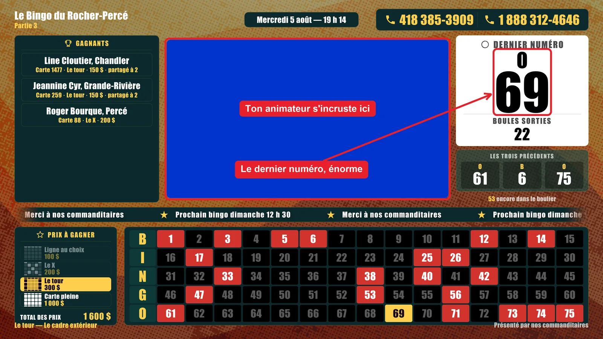
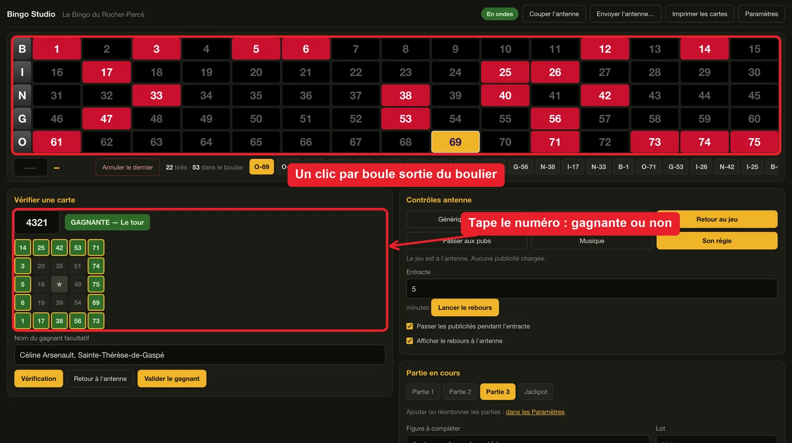

Gratuit · pour les télévisions communautaires
BINGO Habillage TV
Ton boulier, ton animateur, tes cartes papier : rien ne change sur le plateau. À l'écran, par contre, ton bingo a l'air d'une vraie émission — et une carte gagnante se vérifie en quelques secondes, en direct.
Version d'essai 2.28 · Mac et PC (Windows) Compatible avec les cartes de bingo papier Arrow Games Tu veux un logiciel plus professionnel et plus puissant ? Bingo Studio communautaire, gratuit lui aussi et avec la même base de cartes : deux écrans (antenne + régie), les gagnants et le partage des lots, l'entracte et tes commanditaires. Clique ici →
- Le tableau de 1 à 75 Un clic sur chaque numéro qui sort du boulier. Le dernier numéro s'affiche en grand, avec sa lettre, les trois précédents et le nombre de boules encore dans le boulier.
- Vérification en direct Quelqu'un appelle ? Tape le numéro de sa carte : elle s'affiche à l'écran, numéros sortis en rouge, et le logiciel dit si elle est gagnante pour la forme en cours. Jusqu'à 4 cartes côte à côte.
- Tes formes, tes prix Le X, le H, le tour de la carte, la carte pleine, les 4 coins… ou ta propre forme, dessinée case par case. Le bloc « Prix à gagner » suit.
- À tes couleurs Ton logo, ton fond, la couleur des blocs, la zone bleue d'incrustation (position, taille, cadre), ton bandeau d'annonces et tes numéros de téléphone.
- La pause téléphone Un clic sur le bloc téléphone : la zone de l'animateur laisse place à un message (« Nous revenons dans quelques instants ») et à de la musique, le temps de prendre l'appel.
- Les gagnants à l'écran Carte gagnante ? Une fenêtre « Félicitations » pour inscrire le nom du gagnant, puis les gagnants défilent à l'écran avec la forme gagnée.
- Journal d'audit Chaque boule, chaque correction, chaque carte vérifiée et chaque gagnante est notée à la seconde près. Un rapport téléchargeable (tableur) pour chaque partie.
- Plusieurs BINGO Un bingo régulier, un bingo spécial, celui d'un partenaire : chacun garde ses propres réglages. Exporte-les en un fichier pour les copier sur un autre ordinateur.
- Prêt pour la régie Plein écran sur l'écran de ton choix, pas de mise en veille pendant l'émission, et aucune connexion Internet nécessaire.
Une carte vérifiée avant que la personne raccroche
Pendant la vérification, le tableau est verrouillé : impossible d'activer ou d'enlever un numéro par erreur. On referme la vérification, et le jeu continue.


La base de cartes · compatible Arrow Games
Pour vérifier une carte, le logiciel doit connaître ses 24 numéros. La base de cartes papier est directement dans l'application : aucune connexion, aucune saisie de ta part. À terme, trois séries : 1 → 9 000, 27 001 → 36 000 et 45 001 → 54 000.
Les cartes compatibles
BINGO Habillage TV vérifie les cartes de bingo papier Arrow Games, vendues au Québec par Bingo Vézina. Chaque carte porte son numéro de série : c'est lui que tu tapes dans le logiciel.
| Numéros de série | Cartes | Dans le logiciel |
|---|---|---|
| 1 → 9 000 | Cartes de bingo papier Arrow Games | Intégrée |
| 27 001 → 36 000 | Cartes de bingo papier Arrow Games | 27 001 → 34 200 intégrées la suite en cours |
| 45 001 → 54 000 | Série à numériser | À venir |
La couleur du papier et le nombre de cartes par feuille peuvent varier : ce qui compte, c'est le numéro de série imprimé sur chaque carte.
Où acheter ces cartes au Québec
Bingo Vézina — distributeur d'Arrow Games au Québec
8440, boulevard du Golf, Anjou (Montréal) QC H1J 3A1
Téléphone : 514 329-2332 · sans frais : 1 800 361-8197
Au téléphone, précise la série de numéros voulue. Adresse et numéros tirés de la page de contact officielle d'Arrow Games.
Ta télé utilise d'autres cartes ? Envoie-nous le PDF de tes cartes : on les ajoutera au logiciel, pour toutes les télés.
Télécharger
Le logiciel est offert gratuitement. Pas de compte, pas d'abonnement, pas de fonction bloquée.
Tes réglages sont gardés d'une version à l'autre : une mise à jour remplace l'application, pas tes BINGO.
Installer
Le logiciel est gratuit et ne passe pas par une boutique d'applications : au premier lancement, ton ordinateur demande une confirmation. C'est normal, et ça ne se fait qu'une fois.
Sur Mac
-
Ouvre le fichier .dmg
Glisse BINGO Habillage TV dans le dossier Applications.
-
Premier lancement : « Ouvrir quand même »
Double-clique sur l'app. macOS affiche qu'il n'a pas pu vérifier l'app : clique sur Terminé.
Ouvre ensuite Réglages Système → Confidentialité et sécurité, descends jusqu'à la section Sécurité et clique sur « Ouvrir quand même » à côté de BINGO Habillage TV. Confirme avec ton mot de passe (ou Touch ID), puis Ouvrir. C'est fait pour de bon.
Sur macOS 13 ou 14, un clic droit sur l'app → Ouvrir → Ouvrir suffit.
-
Message « l'app est endommagée » ?
Elle ne l'est pas : ça peut arriver avec une version téléchargée avant le 27 septembre 2026 au soir. Télécharge la version actuelle, ou ouvre le Terminal (Applications → Utilitaires), colle cette ligne, puis appuie sur Entrée :
xattr -dr com.apple.quarantine "/Applications/BINGO Habillage TV.app"Relance l'app : c'est réglé pour de bon.
Sur PC (Windows)
-
Ouvre le fichier .exe
Double-clique sur BINGO-Habillage-TV-windows.exe. L'installation se fait toute seule, sans mot de passe administrateur, et crée un raccourci BINGO Habillage TV sur le Bureau.
-
Message « Windows a protégé votre ordinateur » ?
Clique sur Informations complémentaires, puis sur Exécuter quand même. Windows affiche ce message pour les logiciels gratuits qui ne sont pas vendus en boutique.
-
Désinstaller
Paramètres → Applications → BINGO Habillage TV → Désinstaller.
Mode d'emploi express
-
Choisis ton BINGO
Au départ, il y a « Mon BINGO ». Le bouton + en ajoute d'autres, chacun avec ses réglages.
-
Règle-le une fois
Nom, formes et prix, logo, couleurs, zone bleue d'incrustation, bandeau d'annonces, numéros de téléphone, message de pause, générique de fin. Tout est enregistré sur ton ordinateur.
-
Lance la partie
LANCER LE BINGO ▶ : l'écran passe en plein écran. Envoie-le vers ta régie, incruste ton animateur sur la zone bleue.
-
Clique chaque numéro qui sort du boulier
Un clic l'allume, un deuxième clic l'éteint (en cas d'erreur). Clique sur « Jeu en cours » pour passer à la forme suivante.
-
Un appel ? VÉRIFICATION
Tape le numéro de la carte, appuie sur Entrée. Le bouton + ajoute une autre carte à côté. Carte gagnante : inscris le nom du gagnant dans la fenêtre « Félicitations ». Referme la vérification pour reprendre le jeu.
-
FIN
Le bouton FIN affiche ton générique de fin. Le rapport d'audit de la partie se télécharge dans les paramètres (section ADMIN).
Raccourcis : ⌘ , paramètres · ⌘ B changer de BINGO · ⌘ ⇧ D changer d'écran · ⌘ H masquer. Sur PC : Ctrl au lieu de ⌘ (Ctrl H réduit la fenêtre).
Un journal d'audit pour chaque partie
Une plainte d'un joueur ? Une question de la Régie des alcools, des courses et des jeux sur une partie précise ? Tu as la réponse, à la seconde près. Dès que le logiciel s'ouvre, tout ce qui se passe à l'écran est noté automatiquement dans un journal d'audit — sans que tu aies quoi que ce soit à activer.
Ce qui est noté
- Chaque ouverture du logiciel et chaque lancement de partie, avec les formes et les montants des prix en vigueur
- Chaque boule sortie, avec son rang (1re, 2e, 3e…)
- Chaque correction (boule retirée) et chaque RESET du tableau
- Chaque changement de forme
- Chaque carte vérifiée : son numéro, la forme en cours et le verdict — gagnante, ou les numéros qui manquaient
- Le nom de chaque gagnant inscrit dans la fenêtre « Félicitations »
- Les clics refusés pendant une vérification (tableau verrouillé)
- Les pauses téléphone, les pubs diffusées et la fin de la partie
Pourquoi c'est rassurant
- Automatique : impossible d'oublier de l'activer
- Horodaté : date et heure (heure, minute, seconde) sur chaque ligne
- Chaque séance a son identifiant : on retrouve facilement une soirée de bingo précise
- Reste sur ton ordinateur : le journal n'est jamais envoyé sur Internet
- Rien ne se perd : effacer le journal en garde une copie de sécurité datée, et les mises à jour du logiciel le conservent
- Tableau verrouillé pendant chaque vérification : aucun numéro ne peut être changé pendant qu'on vérifie une carte
À quoi ressemble le rapport
| Date | Heure | Événement | Détail | Forme en cours | Boules sorties | Carte | Résultat |
|---|---|---|---|---|---|---|---|
| 2026-10-04 | 19:00:12 | Paramètres enregistrés | Formes et prix : Le X 100$ · Le H 200$ · Tour de la carte 200$ · Carte pleine 1000$ | Le X | 0 | ||
| 2026-10-04 | 19:00:12 | Lancement de la partie | Le X | 0 | |||
| 2026-10-04 | 19:02:41 | Boule sortie | B 7 (n° 1) | Le X | 1 | ||
| 2026-10-04 | 19:03:05 | Boule sortie | G 52 (n° 2) | Le X | 2 | ||
| 2026-10-04 | 19:03:09 | Boule retirée (correction) | G 52 | Le X | 1 | ||
| 2026-10-04 | 19:21:48 | Vérification carte | Carte 27001 — forme « Le X » | Le X | 12 | 27001 | GAGNANTE |
| 2026-10-04 | 19:22:10 | Clic bloqué (vérification en cours) | numéro 33 | Le X | 12 | ||
| 2026-10-04 | 19:23:02 | Vérification carte | Carte 31415 — forme « Le X » | Le X | 12 | 31415 | NON GAGNANTE (manque : 6, 12, 20, 24, 51, 74, 75) |
Exemple. Le vrai rapport contient aussi le nom du BINGO et l'identifiant de la séance.
Le télécharger
Paramètres → section ADMIN → « Télécharger le rapport d'audit (CSV) ». Le fichier s'ouvre directement dans Excel ou Numbers. Bon réflexe : télécharge-le après chaque partie et range-le avec les documents de ton bingo.
Le journal est un outil de traçabilité pour ta télé ; il ne remplace pas les registres que ta licence de bingo peut exiger.
Un mot sur le cadre
BINGO Habillage TV ne tire jamais les numéros. C'est ton boulier, filmé, qui les tire ; la personne à la régie clique ce qui sort. Le logiciel affiche et vérifie — il ne conduit aucun jeu de hasard, et il n'aura jamais de tirage automatique.
Chaque organisme demeure responsable d'obtenir et de respecter sa propre licence de bingo auprès de l'autorité de sa province (au Québec : la Régie des alcools, des courses et des jeux). Ce logiciel est un outil d'habillage, pas un avis juridique.
Du même auteur · gratuit aussi
Besoin de plus ? Bingo Studio communautaire
Bingo Studio communautaire est la régie de bingo professionnelle des télévisions communautaires autonomes. Là où BINGO Habillage TV habille ton écran, Bingo Studio prend en charge toute ton émission, du premier numéro jusqu'au générique de fin. Il utilise la même base de cartes : seul le logiciel change, plus complet et plus puissant.


- La même base de cartesLes mêmes cartes papier Arrow Games : tes cartes fonctionnent dans les deux logiciels.
- La carte à l'antenneLe numéro entré, la carte s'affiche en ondes avec les numéros sortis : tout le monde voit le verdict en même temps.
- Deux écransL'antenne pour tes téléspectateurs, la régie pour toi. Fonctionne aussi avec OBS et Tricaster.
- Gagnants et lotsLes noms restent à l'écran, et le lot se divise tout seul quand deux personnes gagnent la même figure.
- Entracte et commanditairesUn compte à rebours, et les images et vidéos de tes commanditaires passent à l'écran.
- GénériquesDébut et fin avec ton règlement, tes prix, tes remerciements et ta musique.
Tu veux un logiciel plus professionnel et plus puissant ?
Clique ici pour découvrir Bingo Studio →Gratuit · Mac et Windows · en français · fonctionne hors ligne · sans abonnement
BINGO Habillage TV
Tu as déjà tes cartes papier et tu veux un bel habillage à l'écran, simple, sur un seul écran, avec la vérification des cartes en direct.
Bingo Studio communautaire
Tu veux la régie complète : deux écrans, les gagnants et le partage des lots, l'entracte et tes commanditaires — avec la même base de cartes.
Essaie-le. Dis-moi. Contribue si ça vaut le coup.
BINGO Habillage TV ne se vend pas. Il est né dans une petite télé communautaire de la Gaspésie et il est offert aux autres. En ce moment, on travaille fort à numériser les cartes papier, page par page, pour nourrir la base du logiciel. À terme, elle contiendra trois séries : 1 à 9 000, 27 001 à 36 000 et 45 001 à 54 000.
Ta télé communautaire utilise d'autres cartes ? Scanne ton document et envoie-nous le PDF : on l'ajoutera au logiciel avec grand plaisir, pour que ça profite à toutes les télés !
Ta contribution a un but précis : permettre au développeur de se payer un nouvel ordinateur, assez puissant pour bâtir d'autres outils, encore plus gros et plus performants, pour les télévisions communautaires autonomes.
Parce que l'idée derrière tout ça, c'est l'autonomie. Des programmes comme celui-ci nous évitent les abonnements et les coûts exorbitants des compagnies qui profitent de nous. Chaque outil qu'on bâtit ensemble, c'est une facture de moins pour nos télés.
S'il te rend service semaine après semaine, une contribution volontaire, du montant que tu juges juste, fait avancer tout ça.
La contribution se fait sur Ko-fi, en quelques secondes, sans créer de compte. Ton PDF est trop gros pour un courriel ? Un lien de téléchargement (WeTransfer, Google Drive…) fait l'affaire.